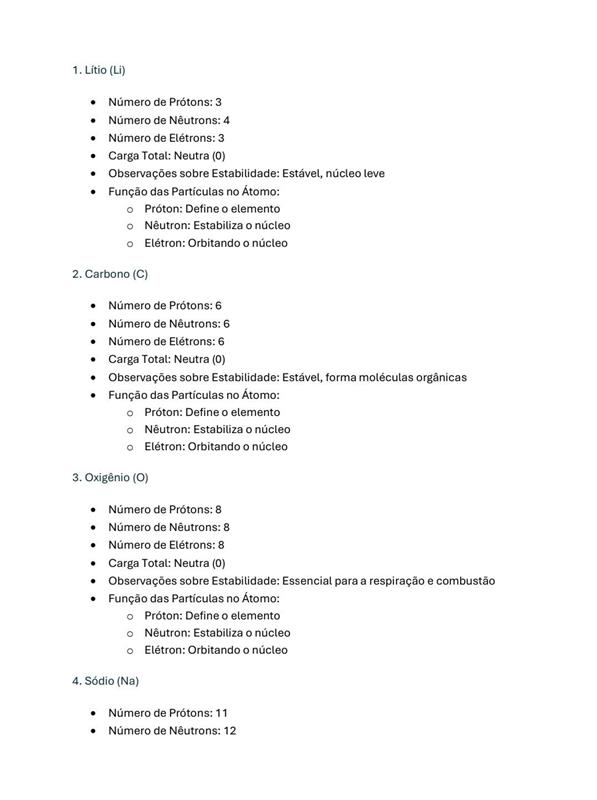
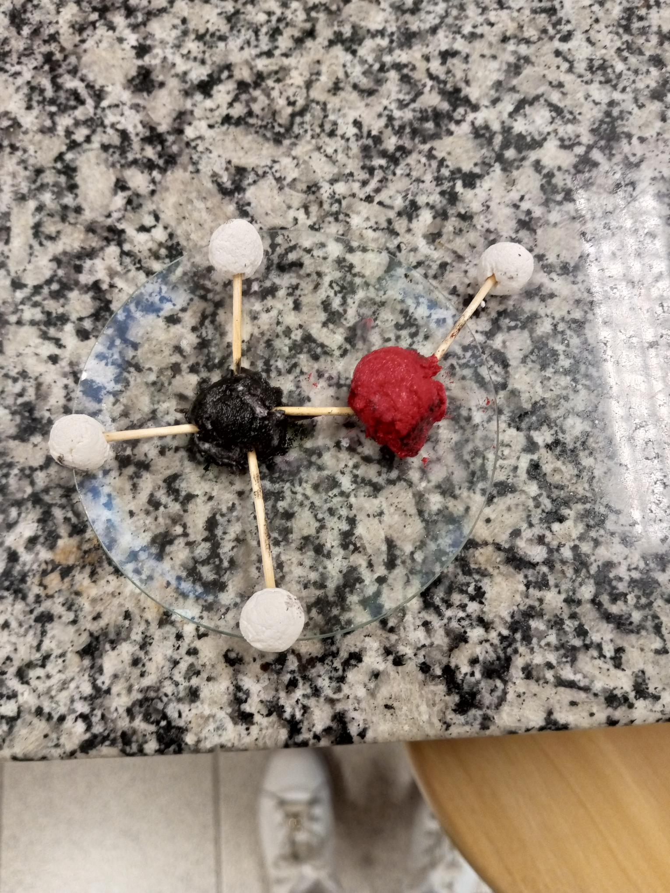

Explorar o mundo natural, entender as leis que regem a natureza e aplicar o conhecimento científico para resolver problemas do nosso cotidiano. Prepare-se para um futuro sustentável!
As Ciências da Natureza são um campo de estudo que engloba as ciências que investigam os fenômenos naturais. Elas se dividem em áreas como Física, Química, Biologia e Geociências, com o objetivo de compreender e explicar as leis que governam o universo natural.
Saiba mais sobre Ciências da Natureza Explorando os fenômenos naturais nas Ciências da Natureza.
O curso de Ciências da Natureza abrange as principais áreas da ciência, incluindo:
Áreas de estudo abrangendo Física, Química, Biologia e Geociências.
Os graduados em Ciências da Natureza podem atuar em diversas áreas, como:
Carreiras variadas para profissionais formados nas Ciências da Natureza.
No curso de Ciências da Natureza, os alunos têm uma abordagem prática e teórica. Aulas de laboratório, estudos de campo e a análise de casos reais são fundamentais para a aprendizagem. O foco está em preparar os alunos para aplicarem o conhecimento científico em diversas áreas.
Conheça a metodologia de ensino Aulas práticas e estudos de campo para uma aprendizagem ativa.
O curso de Ciências da Natureza é essencial para formar profissionais que compreendam profundamente o mundo natural e suas dinâmicas. Com o avanço tecnológico e a busca por soluções sustentáveis, a compreensão das ciências naturais é fundamental para a construção de um futuro mais equilibrado e inovador.
Leia sobre a importância das Ciências da NaturezaAs Ciências da Natureza desempenham um papel crucial em desafios globais, como mudanças climáticas, poluição, e segurança alimentar. Profissionais dessa área ajudam a criar soluções para preservar os recursos naturais e melhorar a qualidade de vida no planeta.
Entenda o impacto das Ciências da Natureza no mundo atualO documentário sobre armas nucleares e os dilemas éticos e políticos examina a história, os impactos e as implicações morais das armas de destruição em massa no cenário global...